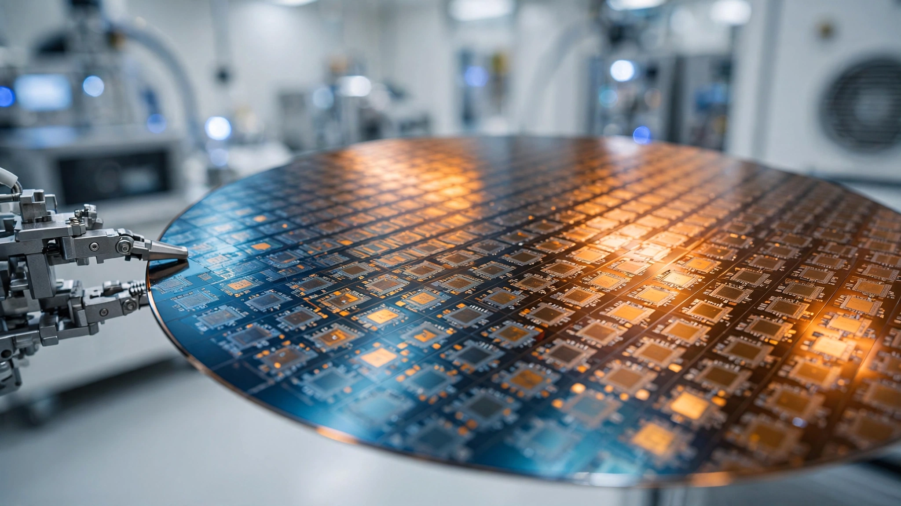

DeepSeek Is Building Its Own Inference Chip. So Is Every Other AI Lab. The $120 Billion Reason Is Simple Math.
Six major AI labs are now designing custom inference silicon, and cross-referencing chip development costs, SMIC manufacturing yields, and per-token pricing across providers reveals why: inference workloads are stable enough to optimize in hardware, and the savings are too large to ignore.

$0.28 per million output tokens. Read that again. That is DeepSeek's current price for V4-Flash inference, running on Huawei Ascend 910B chips at 85% utilization. GPT-4 Turbo charges $30 for the same volume of output, and Claude Opus 4.6 charges $75. DeepSeek is already undercutting Western competitors by 99% on price. And now, according to Reuters, it wants to build its own chip to go even cheaper.
Why? Because DeepSeek looked at the same spreadsheet that Google, Amazon, Meta, Microsoft, and OpenAI have been staring at for years, and the numbers tell a story that is hard to ignore: inference accounts for 60% of global AI compute, it runs known model architectures that do not change after deployment, and general-purpose GPUs are wildly overprovisioned for it. Custom silicon built for a specific inference pattern slashes that waste, and every lab that has done the math reached the same conclusion.
The Custom Silicon Census
Count the programs. Six. Google has been building TPUs since 2015 and is now on its sixth generation, Trillium. Amazon's Annapurna Labs ships Trainium3 chips with nearly all 2026 capacity already sold. Meta quietly developed MTIA v2 for inference while also negotiating to buy Google TPUs, and Microsoft built Maia 100. OpenAI signed a $10 billion deal with Broadcom for custom inference accelerators targeting 10 gigawatts of compute by 2029, and DeepSeek makes six.
| Company | Chip Program | Fab Partner | Focus | Capital Committed |
|---|---|---|---|---|
| TPU v6 (Trillium) | TSMC 3nm | Training + Inference | Undisclosed (6th gen) | |
| Amazon | Trainium3 | TSMC | Training + Inference | "Tens of billions/yr" savings |
| Meta | MTIA v2 | TSMC | Inference | Undisclosed |
| Microsoft | Maia 100 | TSMC 5nm | Inference | Undisclosed |
| OpenAI | Custom XPU | Broadcom / TSMC | Inference | $10B over 4 years |
| DeepSeek | Unnamed | Unknown (likely SMIC) | Inference | Part of $7B round |
Notice the pattern. Five of six programs target inference specifically, not training, because training workloads shift constantly as model architectures evolve: a chip optimized for transformer attention could become obsolete if the next breakthrough uses state-space models or some hybrid architecture nobody has published yet. Inference is different in a fundamental way, because once a model ships, its architecture is frozen, and you can optimize for it in silicon with confidence that you will capture that efficiency for the entire deployment lifetime.
A Calculation Nobody Published
Nvidia's data center revenue hit approximately $130 billion in its latest fiscal year. Industry consensus puts inference at 60% of deployed AI compute workloads, which means roughly $78 billion in GPU revenue serves inference. A custom inference ASIC typically delivers 30 to 50 percent cost savings over general-purpose GPUs, with OpenAI publicly estimating 30% and Amazon CEO Andy Jassy writing in his 2025 shareholder letter that Trainium would save "tens of billions of capex dollars per year," so apply a conservative 35% average saving.
Now model the adoption curve: six companies with custom chip programs collectively account for approximately 55 to 65% of global inference demand. If 40% of total inference compute migrates to custom silicon by 2028, Nvidia's inference GPU revenue faces displacement of $78 billion × 0.40 × 0.35 = $10.9 billion per year. That is 8.4% of Nvidia's projected 2028 total revenue. Not fatal. But it compresses margins at exactly the moment Wall Street is pricing Nvidia for perfection, with a stock that trades at 35 times forward earnings.
And 40% adoption might be conservative, because Google already runs inference on TPUs rather than Nvidia GPUs, Amazon's Trainium3 capacity is sold out, and when OpenAI's chips ship in late 2026, three of the four largest inference customers will be running partially or fully on custom silicon.
DeepSeek's Manufacturing Problem
Everyone else on that table uses TSMC, and DeepSeek almost certainly cannot. U.S. export controls bar Chinese companies from accessing TSMC's advanced nodes, which means DeepSeek's chip would likely be fabricated at SMIC on its 7nm N+2 process.
That process works: TechInsights confirmed SMIC N+2 silicon inside the Huawei Mate 60 Pro's Kirin 9000s processor, proving that China can fabricate complex chips at 7nm without the EUV lithography tools that Western fabs rely on. But yields for complex system-on-chip designs run around 15%, according to industry analysis, while at TSMC comparable 7nm yields exceed 90%, which translates to roughly six times the cost per good die.
An inference ASIC, however, is not a mobile SoC. Not even close. A Kirin processor integrates CPU cores, a GPU, a neural processing unit, a 5G modem, a camera image signal processor, and a display controller on a single die. An inference chip is a repetitive array of multiply-accumulate units fed by a memory controller. Simpler design, more forgiving of defects, because a handful of dead compute lanes can be disabled without scrapping the entire die.
Industry analogy: Bitcoin mining ASICs, which are structurally similar to inference accelerators in their repetitive compute architecture, have been fabricated by SMIC at 7nm since 2022 with yields that TechInsights characterized as commercially viable, and extrapolating from that precedent, a DeepSeek inference ASIC at SMIC could plausibly achieve 40 to 60% yield. At 50% yield, the cost penalty versus TSMC drops from 6× to roughly 1.8×.
If Huawei prices the Ascend 910B at $15,000 to $20,000 per chip with an estimated 40 to 50% gross margin, DeepSeek's own chip at SMIC prices could land between $8,000 and $12,000. At $7,000 in savings per chip and a fleet of 50,000 inference accelerators over three years, that is $350 million in hardware savings against a chip development cost of $500 million to $1 billion. Tight but feasible, especially when the $7 billion funding round provides runway and the alternative is permanent dependence on Huawei's pricing power.
What the Pricing Table Reveals
DeepSeek V4-Flash generates approximately 6,160 tokens per second per Ascend 910B chip, based on the chip's 280-watt thermal design power and benchmarked performance of 22 tokens per second per watt. At $0.28 per million output tokens, each chip generates about $6.21 in revenue per hour, or roughly $46,250 per year at 85% utilization. Subtract $5,667 in annualized chip cost (three-year depreciation on a $17,000 chip) and $196 in electricity (280 watts at $0.08 per kilowatt-hour), and gross margin per chip per year comes in around $40,000.
Comfortable. But a custom ASIC optimized for DeepSeek's specific mixture-of-experts architecture could improve performance per watt by two to three times, and that efficiency gain translates directly into either higher margins at current prices or the ability to drop prices to a point where competitors cannot follow. At 3× efficiency, the same chip count serves three times the traffic, and per-token prices could fall to $0.09 per million output tokens. At that price, inference becomes almost free, and bandwidth, not compute, becomes the binding constraint on what AI systems can do.
The Strongest Case Against
Custom chip programs have a grim track record outside the hyperscaler club. Most fail. Intel acquired Nervana in 2016 and abandoned it by 2019. Graphcore burned through $700 million in funding before being acquired at a fraction of its peak valuation. Cerebras is still trying to prove its wafer-scale approach works commercially. The graveyard is vast.
DeepSeek faces every one of those risks, plus a constraint none of them had: a manufacturing floor that cannot go smaller. SMIC's 7nm process cannot advance to 5nm or 3nm without EUV lithography tools that U.S. export controls prevent China from obtaining, which means that if inference chip architectures evolve to require higher transistor density for competitive performance within the next three to five years, DeepSeek would be locked out of the next process node while Western competitors ride TSMC's roadmap all the way to 2nm.
Model architecture risk compounds the problem. DeepSeek's V4 uses a 1.6-trillion-parameter mixture-of-experts architecture with only 37 billion parameters active per forward pass. A chip optimized for that sparse activation pattern could underperform dramatically if V5 adopts dense attention, recurrent layers, or some architecture that does not yet have a name. Custom silicon is a bet on architectural stability. AI architectures have been anything but stable.
Limitations of This Analysis
Several caveats apply. Huawei does not publicly disclose Ascend 910B pricing. Our estimates ($15,000 to $20,000) draw from supply chain reports and reseller listings, not official figures. SMIC yield data comes from industry observers and reverse engineering firms, not from SMIC itself, which does not discuss advanced node yields publicly. DeepSeek's inference volume is unknown because the company publishes no API usage metrics, which means our revenue-per-chip calculation assumes continuous operation at stated pricing rather than observed demand. Finally, chip development timelines in China under escalating sanctions carry extreme uncertainty. A program that started a year ago, per Reuters' sources, is at least 18 to 24 months from first silicon even under optimistic assumptions.
What You Can Do
If you run inference workloads: Start benchmarking now. The cost gap between Nvidia GPUs and the custom silicon alternatives entering the market is already measurable, with AWS Trainium instances available and Google Cloud TPU pricing undercutting equivalent GPU instances by 20 to 40% on most workloads. If you are locked into Nvidia CUDA, evaluate the migration cost against multi-year savings projections, because every hyperscaler is pricing custom silicon to win.
If you hold Nvidia stock: Pay attention. Inference revenue displacement is not priced into most analyst models, which still assume Nvidia captures 80%+ of inference GPU demand through 2028, and the leading indicators to watch are Amazon's next earnings call for Trainium adoption metrics and OpenAI's first custom chip shipment timeline.
If you build AI models: Design for hardware optionality now. Models that depend on CUDA-specific extensions or Nvidia library optimizations will carry switching costs when custom silicon arrives. JAX, MLIR-based compilers, and hardware-agnostic quantization frameworks are worth the upfront investment. DeepSeek itself integrated LLVM MLIR into its compiler toolchain specifically to enable hardware-agnostic deployment.
The Bottom Line
DeepSeek building an inference chip is not remarkable because it is DeepSeek. It is remarkable because it is the sixth company to reach the same conclusion independently, which suggests this is not a fad but a structural inevitability. Inference workloads are stable enough to optimize in silicon, the savings are large enough to justify the development cost, and general-purpose GPUs are overprovisioned for the job. Nvidia's $78 billion in inference GPU revenue is a pool of inefficiency that custom silicon is engineered to drain. The question is not whether this shift happens. It is happening, right now, across two continents, on both sides of an export control wall that was supposed to slow China down but instead gave DeepSeek a reason to design its own silicon, because the math works everywhere the math can run.